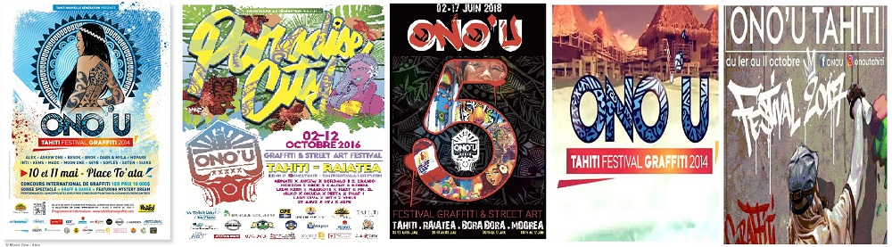

La Polynésie française est surtout réputée pour son environnement naturel (plages, cocotiers, etc.).
Même si celui-ci est exceptionnel, il ne doit pas faire oublier beaucoup d’autres particularités remarquables
de ce pays. Les polynésiens eux même, leur longue histoire et leur culture ancestrale méritent un intérêt
particulier sur lequel je reviendrais plus en détail dans de prochains articles.
Le mot « Ono’u » en tahitien signifie littéralement « la rencontre des couleurs » et il faut reconnaitre que le
terme a été bien choisit lorsqu’on constate le résultat sur les murs concernés. Ce concours permet ainsi de
donner une nouvelle jeunesse à des façades dégradées par le temps, dans un style urbain et contemporain.
Le festival Ono’u représente aussi une belle opportunité pour les artistes locaux de se faire connaitre
à l’international.
Ono'u présent sur le Fenua

Artistes du monde entier
En effet, depuis 2014, durant une semaine environ, des artistes du monde entier viennent se confronter à
l’aide de leurs bombes de peinture et de leur talent pour remporter le prix du meilleur graffeur de l’année.
L’Ono’u festival a pour but d’embellir les vieilles façades en leur donnant une nouvelle vie, grâce aux talents
d’artistes peintres, appelés graffeurs. Ainsi, après une courte période où tous les regards se tournent
vers les graffeurs à l’œuvre, une sorte de « chasse au trésor » commence pour essayer de trouver les
façades où ont fleuri des fresques.
Il faut savoir que ce festival n’accueille plus seulement des graffeurs, mais aussi des sculpteurs et d’autres
artistes. Le festival prend de plus en plus d’ampleur au fil des années. Il y a même un musée, qui a
récemment ouvert ses portes, où l’on retrouve des photos des œuvres, les sculptures réalisées durant
les différents festivals, ainsi que des textiles qui ont étés intégrés au concours récemment.
Vous pouvez consulter le musée du Street Art en Polynésie
ici